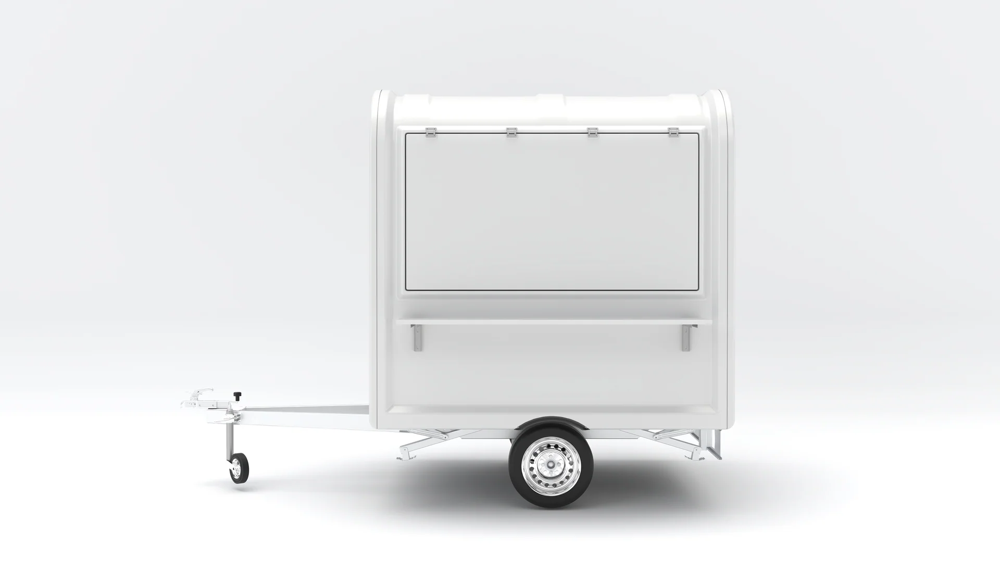
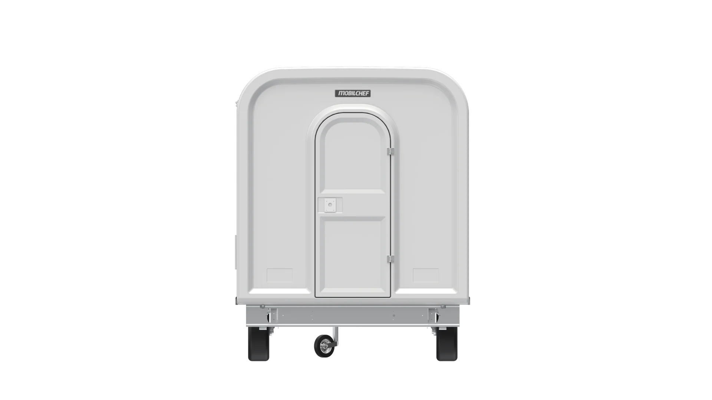
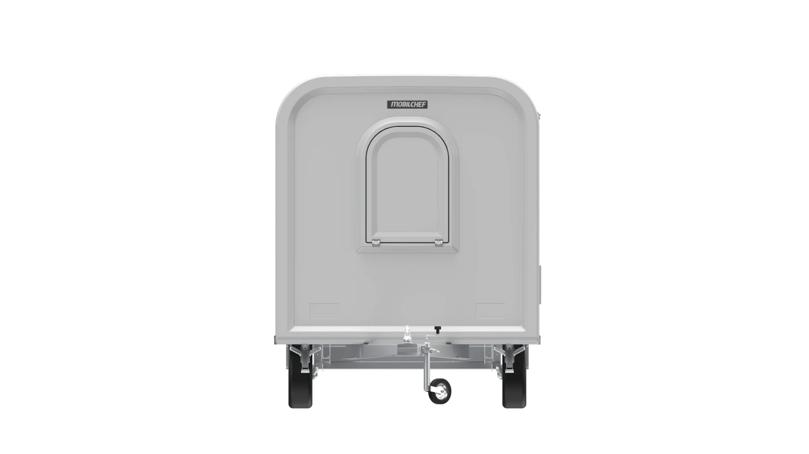
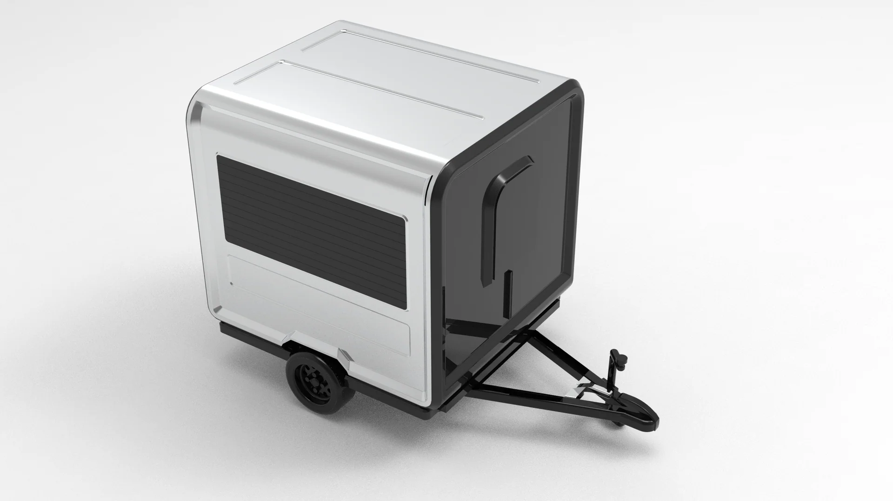

Mobil Ünite Tasarımı
Atiker Holding · Mobilchef
Mobilchef Ekobox
Eko01 L220 Karavan Tasarımı
Aşağı Kaydır
Atiker Holding / Mobilchef — Ekobox Eko01 L220 Karavan Tasarımı
Atiker Holding bünyesinde yer alan Mobilchef için geliştirilen Ekobox Eko01 L220, kompakt ölçülerde maksimum işlevsellik sunan, mobil satış ve yiyecek-içecek konseptlerine uyarlanabilir bir karavan tasarımıdır. Projede temel amaç; sade, modern ve güven veren bir dış form diliyle, profesyonel kullanım ihtiyaçlarını karşılayan pratik bir mobil mutfak çözümü oluşturmaktı.
Tasarımda yuvarlatılmış hatlar, temiz yüzey geçişleri ve bütüncül gövde formu ön planda tutuldu. Fiberglas gövde yapısı, satış penceresi, LED aydınlatma, taş yünü izolasyon, alüminyum yıkanabilir zemin ve krom iç gövde gibi teknik özellikler; ürünün hem dayanıklı hem de hijyenik kullanım koşullarına uygun olmasını desteklemektedir. Ekobox L220; standart, mutfak, kafe, dondurma ve bar konseptleriyle farklı ticari senaryolara adapte edilebilecek esnek bir mobil ünite olarak tasarlanmıştır.
Bu çalışmada ürünün dış kabuk tasarımı, oran dengesi, yüzey karakteri ve marka algısını güçlendiren modern görünümü üzerine odaklanıldı. Minimal beyaz gövde dili, endüstriyel detaylar ve fonksiyonel açılır satış paneliyle birlikte tasarım; hem şehir içi kullanımda hem de etkinlik, festival ve açık alan satış noktalarında profesyonel bir görünüm sunmayı hedeflemektedir.






Yuvarlatılmış hatlar ve temiz yüzey geçişleri ile sade, modern ve güven veren bir dış kabuk. Minimal beyaz gövde, marka algısını destekleyen profesyonel bir görünüm sunar.
Üstten açılan satış paneli ve servis tezgâhı; operasyon noktasında doğal ışıklı, güneşten korumalı bir hizmet alanı yaratır. Tente görevi gören panel, müşteri etkileşimini kolaylaştırır.
Fiberglas dış gövde, taş yünü izolasyon, alüminyum yıkanabilir zemin ve krom iç gövde; uzun ömür, kolay temizlik ve gıda güvenliği standartlarına uygun bir kullanım sağlar.
Standart, mutfak, kafe, dondurma ve bar olmak üzere beş ayrı konsept seçeneğine adapte edilebilir. Şasesiz kiosk varyasyonu ile sabit noktalarda da konuşlandırılabilir.
Ekobox Eko01 L220 — Ürün Detayları
Model: Ekobox – Eko01 L220
Kullanım alanı: Mobil mutfak / satış karavanı
Konsept seçenekleri: Standart, mutfak, kafe, dondurma, bar
Standart donanımlar: LED aydınlatma, satış penceresi, fiberglas gövde, alüminyum yıkanabilir zemin, taş yünü izolasyon, krom iç gövde
Opsiyonel: Şasesiz kiosk tipi varyasyonu da mevcuttur.